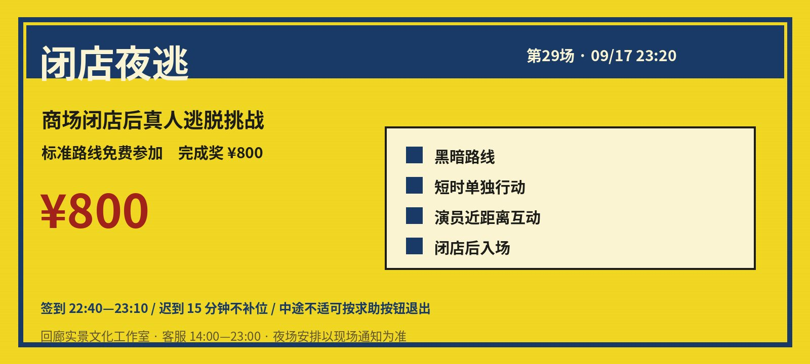

【通知】 第 30 场暂停报名 ｜ 客服 14:00—23:00 ｜ 第 29 场标准项目已结算

9/18 起暂停报名第 29 场 / 商场闭店后真人逃脱挑战
场次：9 月 17 日 23:20 签到：22:40—23:10
闭店后入场，走完标准路线领取 800 元奖金。包含黑暗、近距离演员互动和短时间单独行动；迟到超过 15 分钟不补位。
场地方 9/18 07:48：因内部检修，下一期正式报名暂停。已经填写预登记的用户无需重复提交。
站内公告
- 第 29 场成绩页更新，名单显示 12 人。
- 客服回复口径更新：“标准项目已完成”。
- 因场地检修，下一期报名暂停。
- 第 29 场标准挑战结束，奖金结算中。